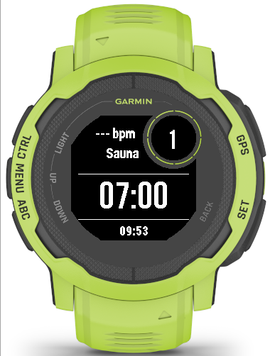
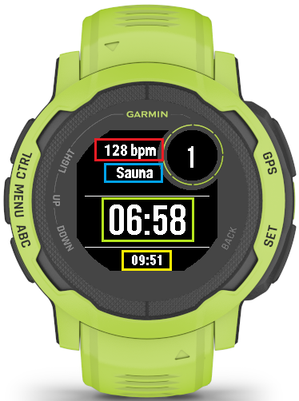
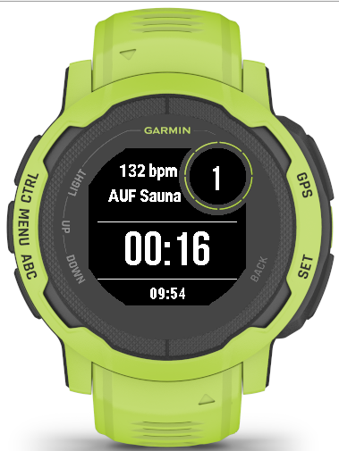
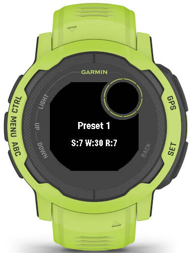
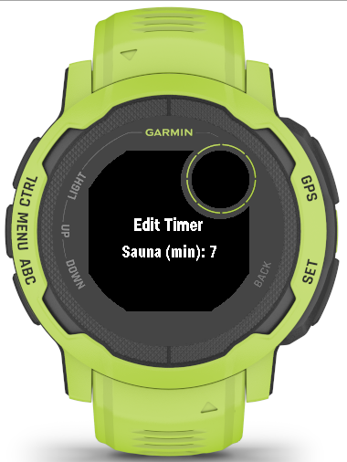
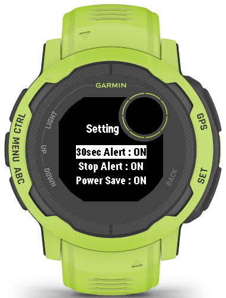
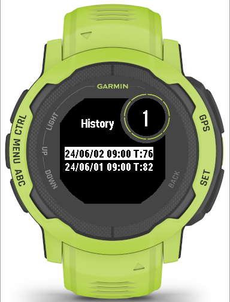
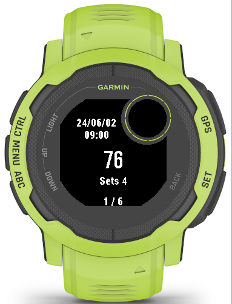
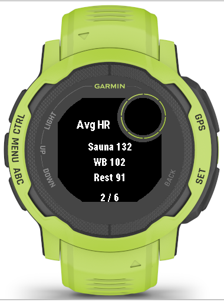

Garmin App
Sauna Timer
サウナ、水風呂、休憩の時間を計測し、セッションのログを記録するGarmin Instinct 2・3向けアプリです。
アプリ概要
Sauna Timerは、サウナで過ごす時間を計測し、各セットのログを記録するためのタイマーアプリです。サウナ、水風呂、休憩の3つを1セットとして、セッション全体を分かりやすく管理できます。
1セットの流れ
- サウナ
- 水風呂
- 休憩
サウナ、水風呂、休憩では、それぞれに設定した時間をカウントダウンします。残り時間が0になると、バイブレーションで次のタイミングをお知らせします。
主な機能
- セットごとのスコア表示
- 各セットの終了時に、独自の計算方法による「TotonoiScore」を表示します。
- 全セットの振り返り
- セッション終了時に、完了したすべてのセットのスコアをまとめて確認できます。
- Garmin Connectへのログ送信
- 設定を有効にすると、計測したログをGarmin Connectへ送信できます。
注意事項
- 本アプリはGarmin Instinct 2・3向けです。
- 初代Garmin Instinctでも動作する場合がありますが、使用中に意図せず終了する可能性があり、安定した動作は保証していません。
高温下でのスマートウォッチの使用は推奨されておりません。故障・破損については一切の責任を負いません。
使い方
Garminウォッチの物理ボタンを使って操作します。はじめにボタンの呼び方を確認し、その後、各画面の説明に沿って操作してください。
各種ボタン
起動画面

アプリを起動したときに表示される画面です。
- ENTER タイマーを開始します。
- DOWN メインメニューを開きます。
- BACK タイマー開始前であれば、アプリをすぐに終了します。
最後に選択したプリセット、またはTimer Editで保存した設定が読み込まれます。
タイマー動作中

現在のフェーズと残り時間を確認しながら、セッションを進める画面です。
- ENTER Timer Menuを開きます。メニューを開いている間、タイマーは停止します。
- DOWN メインメニューを開きます。メニューを開いている間もタイマーは動き続けます。
- UP 現在のフェーズを延長します。Sauna・Restは1分ずつ、最大5分まで延長できます。WB（水風呂）は30秒ずつ、最大2分まで延長できます。
- DOWN を素早く2回押すと、残り時間を短縮します。Sauna・Restは30秒ずつ、WBは10秒ずつ短縮できます。
- BACK を素早く2回押すと、タイマーを止めずに終了確認画面を開きます。
短縮できる最小残り時間は、Sauna・Restが30秒、WBが10秒です。
タイマー停止中と、フェーズ終了直後の待機中は短縮できません。
画面に表示される情報
- 右上 現在のセット数
- 赤枠 現在の心拍数
- 青枠 現在のフェーズ
- 緑枠 現在のタイマー残り時間
- 黄色枠 現在時刻
Aufgussモード

AufgussモードはSaunaフェーズ中だけ使用できます。通常のカウントダウンに代わり、Sauna開始からの経過時間をカウントアップして表示します。
ENTERを素早く2回押すか、Timer Menuで再度「Aufguss」を選ぶと通常モードへ戻ります。
- 設定時間が残っている場合は、その残り時間からカウントダウンを再開します。
- 設定時間を過ぎている場合は、残り5秒からカウントダウンを再開します。
設定が7分の場合、経過時間6分で解除すると残り1分、経過時間10分で解除すると残り5秒から再開します。
経過時間が10分に達した後は、5分ごとの区切りでバイブレーションが鳴動します。
Preset Timer

UP／DOWNでプリセットを切り替え、ENTERで適用します。BACKで前の画面に戻ります。
| プリセット | Sauna | WB | Rest |
|---|---|---|---|
| Preset 1 | 7分 | 30秒 | 7分 |
| Preset 2 | 10分 | 60秒 | 8分 |
| Preset 3 | 5分 | 20秒 | 10分 |
| Edit Timer | Timer Editで最後に保存した値 | ||
Edit Timerの初期値はPreset 1と同じです。最後に選択したプリセットは保存され、次回起動時にも使用されます。
Timer Edit

UP／DOWNで表示中の値を増減し、ENTERで次の項目へ進みます。BACKを押すと編集をキャンセルして前の画面に戻ります。
設定項目は「Sauna → WBath → Rest」の順に切り替わります。RestでENTERを押すと値を保存し、タイマー画面へ戻ります。
| 項目 | 設定範囲 | 単位 |
|---|---|---|
| Sauna | 1～15分 | 1分 |
| WBath | 10～120秒 | 10秒 |
| Rest | 1～15分 | 1分 |
Setting

UP／DOWNで項目を移動し、ENTERでON／OFFを切り替えます。BACKで前の画面に戻ります。設定した値は次回起動時にも引き継がれます。
WBを30秒以下で開始した場合、30sec Alertは鳴動しません。ただし、延長によって残り時間が30秒以上になった場合は通知の対象になります。
FIT Saveはタイマー開始前だけ変更できます。タイマー開始後は設定を変更できません。
History



過去のセッション結果を最大10件まで確認できます。新しい履歴が追加されると、古い履歴から順に上書きされます。
FIT SaveがOFFでも、アプリ内のHistoryは保存されます。
- UP／DOWN 履歴や詳細ページを移動します。
- ENTER 選択した履歴の詳細を開きます。詳細画面では履歴の削除確認を開きます。
- BACK 前の画面へ戻ります。
履歴の詳細では、開始日時、全体のTotonoiScore、セット数、Sauna・WB・Restの平均心拍数、各セットのTotonoiScoreを確認できます。
FAQ
準備中です。